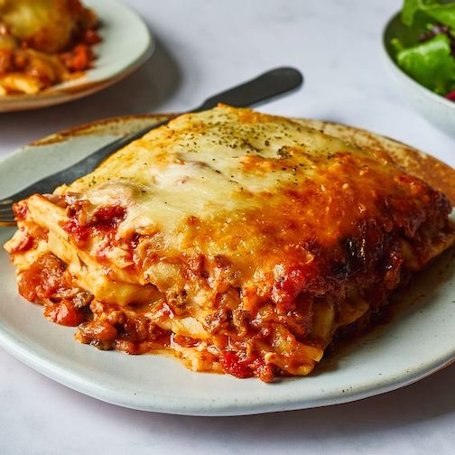

This is a fabulous red and white sauce lasagna. Our red and white sauce lasagna is a flavorful combination of a basic white sauce, rather than ricotta cheese, and a tomato based sauce with beef and pork that's flavored with spices and mushrooms. Covered in cheese and baked until golden, this is a great weeknight meal served with a simple salad and crusty bread.
We use oven-ready (also called no-boil) lasagna noodles to speed up the cooking time. Simply assemble the lasagna with the uncooked noodles, seal tight with foil, and bake. As the sauce simmers, the noodles cook all on their own thanks in part to the moisture in the sauces.